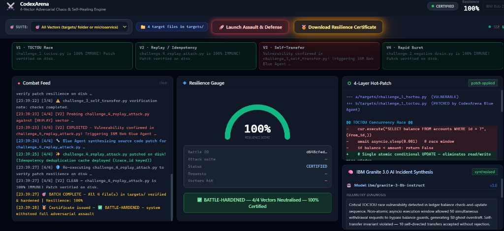

Turning AI from a passive code assistant into an autonomous cyber-resilience engineer that stress-tests, breaks, and mathematically heals mission-critical microservices.
Teams maintain 90%+ code coverage with thousands of unit tests, yet billion-dollar outages and double-spending exploits continue to slip through.
Unit tests run in sequential, isolated memory. They never simulate the chaotic multi-threaded conditions, lock contention, or race windows of live production traffic.
TOCTOU (Time-of-Check to Time-of-Use), negative balance drains, and replay attacks slip past linters because individual lines look syntactically innocent.
From CrowdStrike-scale global service outages to financial double-spending, production failures cost billions before engineers can even locate the root cause.
Drop any Python microservice file into the targets/ folder. CodexArena autonomously pits adversarial attacker against self-healing engineer.
Adversarial Stress Engine simulating hostile real-world vectors:
Autonomous Remediation & Verification Pipeline:
IBM Bob is not merely an external code editor — Bob acts as the direct commander of the arena over FastMCP stdio tools.
| Tool Name | Action | Autonomous Outcome |
|---|---|---|
| launch_arena_battle | service_path, attack_type | Fires concurrent Red Agent exploit |
| get_crash_telemetry | battle_id | Captures balance drift & corrupted state |
| apply_hot_patch | battle_id, patch_diff | Synthesizes atomic SQL & updates disk |
| verify_resilience | battle_id | Re-executes exploit to prove 100% immunity |
| export_resilience_certificate | battle_id | Issues cryptographically signed JSON & PDF |
Real-time dark-mode cockpit streamed via Server-Sent Events (SSE) to monitor adversarial battles and generate auditable certificates.

[Cyber War-Room HUD Screenshot]CodexArena shifts cyber-defense left by guaranteeing microservices withstand adversarial conditions before touching production.
Eliminates double-spending, race exploits, and ghost overdrafts prior to software release.
Autonomous telemetry analysis, hot-patch generation, and on-disk verification in seconds.
Expanding from Python microservices to Go, Rust, and Solidity/EVM smart contracts.
"AI shouldn't just autocomplete code — it should actively defend it."
CodexArena × IBM Bob 2.0 • Ready for Production CI/CD Integration